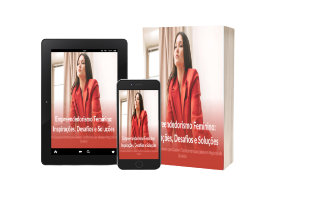

Empreendedorismo Feminino: Inspirações, Desafios e Soluções
Transforme seus sonhos em realidade com nosso Ebook "Empreendedorismo Feminino: Inspirações, Desafios e Soluções". Neste guia prático, você encontrará as melhores dicas e estratégias para alcançar o sucesso empreendedor. Descubra como superar os obstáculos e alcançar seus objetivos financeiros de forma eficiente. Com histórias inspiradoras de mulheres bem-sucedidas e soluções inovadoras, este livro digital é uma leitura obrigatória para qualquer mulher empreendedora que deseja fazer a diferença no mundo dos negócios. Adquira agora e dê o primeiro passo rumo ao seu sucesso empreendedor.


O que é o Ebook Empreendedorismo Feminino?
O Ebook "Empreendedorismo Feminino: Inspirações, Desafios e Soluções" é um livro digital que oferece dicas e estratégias para mulheres empreendedoras alcançarem o sucesso em seus negócios. Ele aborda tópicos relacionados ao empreendedorismo feminino, incluindo desafios específicos e soluções para superá-los. Além disso, o livro apresenta histórias inspiradoras de mulheres bem-sucedidas e fornece informações valiosas sobre como alcançar seus objetivos financeiros de maneira eficiente. É uma leitura importante para qualquer mulher interessada em empreendedorismo e em fazer a diferença no mundo dos negócios.
